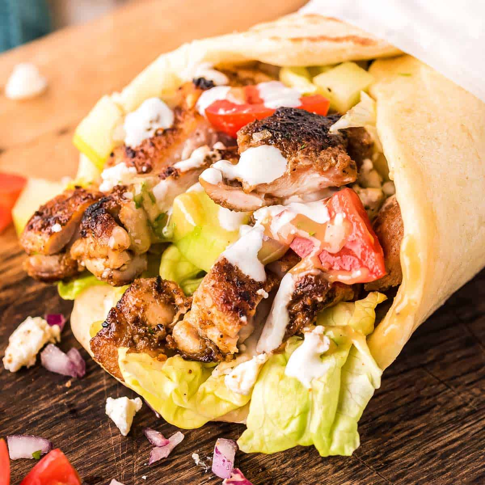

Chicken shawarma

Description
This Chicken Shawarma recipe is going to knock your socks off! Just a
handful of every day spices makes an incredible Chicken Shawarma marinade
that infuses the chicken with exotic Middle Eastern flavours. The smell
when this is cooking is insane!
Ingredients
- 2lb / 1kg chicken thigh fillets (skinless and boneless)
Marinade
- 1 large minced garlic clove
- 1 tablesppon ground coriander
- 1 tablespoon ground cumin
- 1 tablespoon ground cardamon
-
1 teaspoon ground cayenne pepper (reduce to $half; to make it not spicy)
- 2 teaspoons smoked paprika
- 2 teaspoons salt
- Black pepper
- 2 tablespoons lemon juice
- 3 tablespoons olive oil
Yoghurt sauce
- 1 cup Greek yoghurt
- 1 clove crushed garlic
- 1 teasppon cumin
- Squeeze of lemon juice
- Salt and pepper
To serve
- 6 flatbreads (Lebanese or pita bread or homemade soft flatbreads)
- Slicce lettuce
- Tomato slices
Steps
-
Combine the marinade ingredients in a large ziplock bag (or bowl).
-
Add the chicken and use your hands to make sure each piece is coated. If
using a ziplock bag, I find it convenient to close the bag then massage
the bag to disperse the rub all over each chicken piece.
- Marinate overnight or up to 24 hours.
-
Combine the Yoghurt Sauce ingredients in a bowl and mix. Cover and put
in the fridge until required (it will last for 3 days in the fridge).
-
Heat grill/BBQ (or large heavy based pan on stove) on medium high. You
should not need to oil it because the marinade has oil in it and also
thigh fillets have fat. But if you are worried then oil your
hotplate/grill.
-
Place chicken on the grill and cook the first side for 4 to 5 minutes
until nicely charred, then turn and cook the other side for 3 to 4
minutes (the 2nd side takes less time).
-
Remove chicken from the grill and cover loosely with foil. Set aside to
rest for 5 minutes.
-
Slice chicken and pile onto platter alongside flatbreads, Salad and the
Yoghurt Sauce.
-
To make a wrap, get a piece of flatbread and smear with Yoghurt Sauce.
Top with a bit of lettuce and tomato and Chicken Shawarma. Roll up and
enjoy!